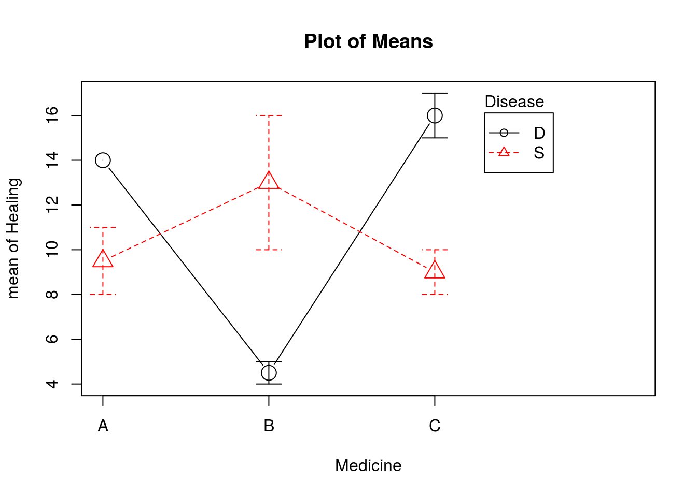
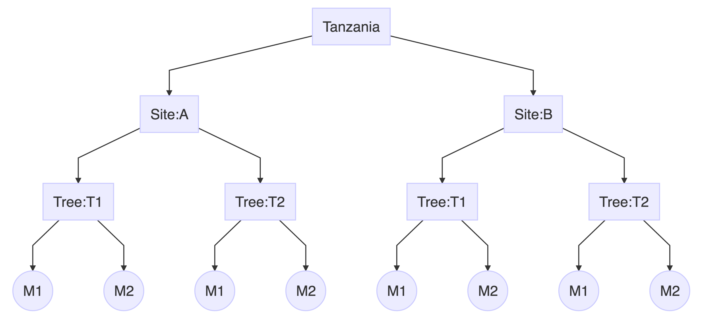
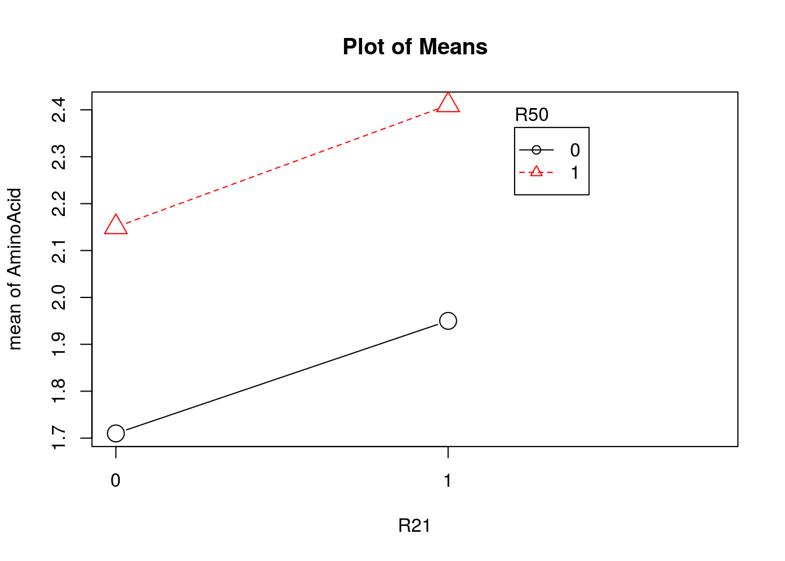

Week Three
Exercise 1 (Hospital Data)
Load the
Hospital.RdataConstruct an interaction effect plot. (Graphs > Plot of means)

- Apply a model with Healing as response, Disease, and Medicine as factor where interaction is included, call this
Model1. - Test if interaction is present.
- Estimate all parameters.
- Split the first observation into 5 parts: constant, (sample) effect of disease, (Sample) effect of medicine, (Sample) effect of interaction and residual Show that the sum of the 4 effects gives the sample mean in the level combination the observation belongs.
- Repeat the analysis without including interaction, call this
Model2. - Find and store the fitted value and the residuals for both model and compare.
- Compare the Sum of squares for the two different models.
- If you should test on main effects for in
Model2without use of computer, show how you can use the results from theModel1relatively easy. - Plot the residuals (y-axis) against the fitted value (x-axis) for both models and show how this plot reveals model problems in
Model2. - A student that had not heard about 2-factor design tried to investigate the effect of medicine by a One Way ANOVA model (
Model3). Explain why this is incorrect for this data. For all 3 models find R-square, and see how this increases with complexity. \[\text{R-square} = \frac{\text{SSModel}}{\text{SS}_\text{Total}} = 1 – \frac{\text{SSE}}{\text{SS}_\text{Total}}\]
Exercise 2 (Mussels Data)
- Load the mussels data.
- Assume a model where eatable is the response size and season are the factors.
- Assume no interaction. Store the residuals and the fitted values.
- Plot residual against fitted values and make comments.
- Give an interpretation of the replicate variance (\(\sigma^2\)). Estimate \(\sigma^2\) and construct a 95% confidence interval for the true value.
- Assume a model including interaction. Store the residuals and the fitted values.
- Plot residual against fitted values and make comments.
- Give an interpretation of the replicate variance (\(\sigma^2\)) and construct a 95% confidence interval for the true value.
Exercise 3
Load the mussels data. The data is from a commercial farming of Blue Mussels where response is eatable food after boiling in percent of total weight. The mussels are sorted after size (Large and small) and season they were harvested (summer or autumn).
Assume a model where eatable is the response, size and season are the factors and interaction is included. Analyze the model.
The model we are analysing is,
\[\begin{equation} y_{ijk} = \mu + \tau_i + \beta_j + (\tau\beta)_{ij} + \epsilon_{ijk} \label{eq:musselFullModel} \end{equation}\]Where,
| \(i\) | = | \(1\) (small), \(2\) (large) corresponding to size |
| \(j\) | = | \(1\) (autumn), \(2\) (summer) corresponding to season |
| \(k\) | = | \(1, 2, \ldots, 6\) corresponding to replicates |
| \(y_{ijk}\) | = | eatable percentage of total weight of \(k^\text{th}\) mussels of size \(i\) on farmed during \(j\) season |
| \(\epsilon_{ijk}\) | \(\sim\) | \(\text{NID}(0, \sigma^2)\), \(\sum_{i = 1}^2\tau_i = 0\) and \(\sum_{j = 1}^2 \beta_j = 0\) |
In addition,
\[\sum_{i = 1}^2(\tau\beta)_{ij} = \sum_{j = 1}^2(\tau\beta)_{ij} = 0\]
The ANOVA table for model in equation ((??)) is,
| Df | Sum Sq | Mean Sq | F value | Pr(>F) | |
|---|---|---|---|---|---|
| season | 1 | 294 | 294.0 | 122.5 | 0 |
| size | 1 | 96 | 96.0 | 40.0 | 0 |
| season:size | 1 | 294 | 294.0 | 122.5 | 0 |
| Residuals | 20 | 48 | 2.4 |
Here, both factors season and size along with their interactions are significant (low p-value). Thus, we can conclude the model contains interaction between size and season.
The farm decide to harvest in summer, and they wanted to find out if there are significant positive effect of harvesting large mussels compare to small mussels. Answer the question by a t-test. State the null hypothesis and the alternative hypothesis.
Here we have average percent of total weigth of eatable mussels by size and summer is,
| season | liten | stor | (all) |
|---|---|---|---|
| host | 24 | 13 | 18.5 |
| sommer | 24 | 27 | 25.5 |
| (all) | 24 | 20 | 22.0 |
The hypotheis to test if there is positive effect of harvesting large mussels than small mussels in summer season is,
\[ \begin{aligned} H_0 &: \mu_\text{large:summer } (\mu_{22}) = \mu_\text{small:summer }(\mu_{12}) \\ H_1 &: \mu_\text{large:summer } (\mu_{22}) > \mu_\text{small:summer }(\mu_{12}) \end{aligned} \]
Note that:
\[ \begin{aligned} \mu_{12} - \mu_{22} &= \mu + \tau_2 + \beta_2 + (\tau\beta)_{22} - \mu - \tau_1 - \beta_2 - (\tau\beta)_{12} \\ &= \tau_2 - \tau_1 + (\tau\beta)_{22} - (\tau\beta)_{12} \end{aligned} \]
Due to interaction term, the difference in mean is dependent on both of the factors. We can use the difference of their respective estimates, i.e, \(\bar{y}_{12} - \bar{y}_{22} = 27 - 24 = 3\).
Further,
\[ \begin{aligned} \text{var}\left(\bar{y}_{12} - \bar{y}_{22}\right) &= \frac{\sigma^2}{6} + \frac{\sigma^2}{6} = \frac{\sigma^2}{3} \\ \text{SE}\left(\bar{y}_{12} - \bar{y}_{22}\right) &= \sqrt{\frac{\hat{\sigma}^2}{3}} \\ &= \sqrt{\frac{\text{MSE}}{3}} = 0.894 \end{aligned} \]
Therefore, the test-statistics,
\[t = \frac{\left(\bar{y}_{12} - \bar{y}_{22}\right)}{\text{SE}\left(\bar{y}_{12} - \bar{y}_{22}\right)} = \frac{3}{0.894} = 3.354 \sim t_{\alpha, N-a}\]
At 95% confidence level, \(t_{\alpha, N-a} = t_{0.05, 2.4} = 2.614\)
Since, \(3.354\) > 2.614, we reject Null hypothesis and conclude that the farm can make more profit by farming larger mussels than in smaller mussels in summer.
Exercise 4
Load hospital data.
Apply a model with Healing as response, Disease, and Medicine as factors and interaction is included. Test if interaction is present.
The model is,
\[y_{ijk} = \mu + \tau_i + \beta_j + (\tau\beta)_{ij} + \epsilon_{ijk}\]
where,
| \(i\) | = | 1(D), 2(S) corresponding to Disease |
| \(j\) | = | 1(A), 2(B), 3(C) corresponding to Medicine |
| \(i\) | = | 1, 2 corresponding to replication |
| \(y_{ijk}\) | = | Healing of Disease \(i\) due to Medicine \(j\) |
| \(\epsilon_{ijk}\) | \(\sim\) | \(\text{NID}\left(0, \sigma^2\right)\) |
The ANOVA table for the model is,
| Df | Sum Sq | Mean Sq | F value | Pr(>F) | |
|---|---|---|---|---|---|
| Medicine | 2 | 31.5 | 15.75 | 3.500 | 0.098 |
| Disease | 1 | 3.0 | 3.00 | 0.667 | 0.445 |
| Medicine:Disease | 2 | 138.5 | 69.25 | 15.389 | 0.004 |
| Residuals | 6 | 27.0 | 4.50 |
The table shows that the interaction is significant (low p-value corresponding the interaction). Thus we can conclude that the interaction is present in the model.
Execute Tukey tests on the pairs of medicine for patients having Depression and for patients having schizophrenia.
The average of factors and their combinations are as follows,
| Disease | Medicine:A | Medicine:B | Medicine:C | Medicine:(all) |
|---|---|---|---|---|
| D | 14.00 | 4.50 | 16.0 | 11.5 |
| S | 9.50 | 13.00 | 9.0 | 10.5 |
| (all) | 11.75 | 8.75 | 12.5 | 11.0 |
Thus, we have the difference in mean between the pairs of Medicine i.e, AB, AC and BC for patients having Depression and Schizophrenia as,
Schizophrenia
\[ \begin{aligned} \hat{\mu}_{A:S} - \hat{\mu}_{B:S} &= -3.5 \\ \hat{\mu}_{A:S} - \hat{\mu}_{C:S} &= 0.5 \\ \hat{\mu}_{B:S} - \hat{\mu}_{C:S} &= 4 \\ \end{aligned} \]
Depression
\[ \begin{aligned} \hat{\mu}_{A:D} - \hat{\mu}_{B:D} &= 9.5 \\ \hat{\mu}_{A:D} - \hat{\mu}_{C:D} &= -2 \\ \hat{\mu}_{B:D} - \hat{\mu}_{C:D} &= -11.5 \\ \end{aligned} \]
Further, the Tukey test criteria is,
\[ \begin{aligned} T &= q_{\alpha, (a, f)}\sqrt{\frac{\text{MSE}}{n}} = q_{0.05, (3, 6)} \sqrt{\frac{4.5}{3}} = 4.339 \times \sqrt{1.5} = 5.314 \end{aligned} \]
Medicine A and C are new medicine. Test if those are better than B for patients suffering from Depression.
Exercise 5
A student wanted to study how a medicament influenced feed consumption on rats. She included sex and the fact that some of the rats were sterilized in her study. In addition half of the animals were given placebo. In total 40 animals were available, and the design is balanced.
| Sex | Sterilized | Medicament | Mean | Placebo | Mean |
|---|---|---|---|---|---|
| Male | No | 21.46, 23.92, 22.56, 16.12, 21.48 | 21.108 | 25.64, 28.84, 26.00, 26.02, 23.24 | 25.948 |
| Male | Yes | 15.44, 23.54, 23.52, 17.96, 19.02 | 19.896 | 22.50, 24.48, 25.52, 24.76, 20.62 | 23.576 |
| Female | No | 18.58, 15.44, 16.12, 16.88, 17.58 | 16.920 | 17.82, 15.76, 12.96, 15.00, 19.54 | 16.216 |
| Female | Yes | 18.20, 14.56, 15.54, 16.82, 14.56 | 15.936 | 19.74, 17.48, 16.46, 16.44, 15.70 | 17.164 |
This model was applied:
\[y_{ijkl} = \mu + \alpha_i + \beta_j + \gamma_k + (\alpha\beta)_{ij} + (\alpha\gamma)_{ik} + (\beta\gamma)_{jk} + (\alpha\beta\gamma)_{ijk} + \epsilon_{ijkl}\]
Where,
| \(i\) | = | 1 (Active Medicament) or 2(Placebo) |
| \(j\) | = | 1 (Male) or 2 (Female) |
| \(k\) | = | 1 (Non sterilizes) or 2 (Sterilized) |
| \(l\) | = | 1, 2, …, 5 corresponding to replications |
- Give the Common assumptions concerning \(\epsilon_{ijkl}\). Explain why these are necessary in the model.
| Df | Sum Sq | Mean Sq | F value | Pr(>F) | |
|---|---|---|---|---|---|
| Sex | 1 | 368.813 | 368.813 | 69.703 | 0.000 |
| Sterilized | 1 | 8.190 | 8.190 | 1.548 | 0.222 |
| Medicament | 1 | 51.121 | 51.121 | 9.662 | 0.004 |
| Sex:Sterilized | 1 | 7.868 | 7.868 | 1.487 | 0.232 |
| Sex:Medicament | 1 | 39.960 | 39.960 | 7.552 | 0.010 |
| Sterilized:Medicament | 1 | 0.372 | 0.372 | 0.070 | 0.792 |
| Sex:Sterilized:Medicament | A | B | C | D | 0.296 |
| Residuals | E | 169.318 | 5.291 | ||
| Total | F | 651.618 |
S = 2.30026 , R-Sq = G%- Find the missing values
A,B,C,D,E,FandG.
| A: | Degree of freedom of 3 factor interaction = 1 |
| B: | Sum of square of 3 factor interaction |
| \[\text{SS}_\text{Total} - \text{ sum of all other degree of freedom } = 5.975\] | |
| C: | Mean sum of square of 3 factor interaction |
| \[\text{MS}_{\alpha\beta\gamma}=\frac{\text{SS}_{\alpha\beta\gamma}}{df_{\alpha\beta\gamma}} = 5.975\] | |
| D: | F statistic corresponding to 3 factor interaction |
| \[\frac{\text{MS}_{\alpha\beta\gamma}}{\text{MS}_\text{residual}} = 1.129\] | |
| E: | Error Degree of freedom \(=abc(n-1) = 32\) |
| F: | Total Degree of freedom \(=(N - 1) = 39\) |
| G: | R-squared (variation explained by the model) |
| \[\text{R-sq} = 1 - \frac{\text{SS}_\text{E}}{\text{SS}_\text{Total}} = 74.02\] |
- What important conclusions can be detected?
Exercise 6
Mango is an excellent source for vitamin C. Assume content of vitamin C in mango are measured on 2 sites in Tanzania, A in the highland, B in the lowland. In each site 2 trees are randomly chosen and 2 fruit on each tree are also randomly chosen. Data is stored in the file called Mango.Rdata
Explain why this must be treated as a nested design.
Here, trees are choosen after the sites are selected. It is impossible to see the effect of same trees in both lowland and highland. The trees selected at lowland is different from the trees selected at highland. and the measurements are made on mangos form each of the trees (replicated twice). Thus this must be a nested design with the following hierarchical structure.

Here,
Tree:T1fromSite:Ais different fromTree:T1fromSite:Band so on. It is not possible observe the effect ofTree:T1ofSite:AinSite:B.Explain why it is natural to regard tree as a random effect.
Two specific trees can not be an interest of a research, rather a population of tree can be a subject of interest in the research. This research is more interested to see if there is any variation in vitamin C content in mango found in different places in Tanzania. So, it is natural to regard tree as a random effect.
Assume site to be a fixed effect State the model.
Test if there is site effect, and if there is tree effect. Write down both the null hypothesis ant the alternative hypothesis.
A model is,
\[y_{ijk} = \mu + \tau_i + \beta_{j(i)} + \epsilon_{(ij)k}\]
where, \(i = 1, 2\) for site, \(j = 1, 2\) for tree nested in site \(i\) and \(k = 1, 2\) for two replication of mangos.
The hypothesis to test the effect of tree is,
\[ \begin{aligned} H_0 &: \sigma_\beta^2 = 0 \\ H_1 &: \sigma_\beta^2 > 0 \end{aligned} \]
Mean Sq Sum Sq Df F value Pr(>F) site 8.0 8 1 1.000 0.423 site:tree 8.0 16 2 1.455 0.335 Residuals 5.5 22 4 Here, neither the site or the trees nested on site are significant. There is no evidence of tree effect in this model.
Estimate both variance parameters.
From the fitted model, we have
Err.term(s) Err.df VC(SS) 1 site (2) 2 fixed 2 site:tree (3) 4 1.25 3 Residuals - - 5.50 (VC = variance component)From the output above, the estimates of variance parameters \(\sigma_\beta^2\) and \(\sigma^2\) are 1.25 and 5.5 respectively.
In addition, we can also find variance components using mean sum of squares as,
\[ \begin{aligned} \hat{\sigma}^2 &= \text{MS}_E = 5.5 \\ \hat{\sigma}_\beta^2 &= \frac{\text{MS}_\text{B(A)} - \text{MS}_E}{n} \\ &= \frac{8 - 5.5}{2} =1.25 \end{aligned} \]
The researchers concluded that the variance in Vitamin C is larger inside the trees than between the trees. Do you agree?
The estimate of variance components \(\hat{\sigma}^2 = 5.5\) refers to the variance within the trees and \(\hat{\sigma}_\tau^2 = 1.25\) refers to the variance between the trees. Here the variance witin the tree is larger than between the tree, the conclusion of the researcher is true. However statistical testing of this difference is out of the scope of this course.
Exercise 7
In an experiment 4 sires were used. Each sire was tried in 3 herds (different herds for each sire). From each herd 4 cows were randomly picked out. Data are saved as Nestedsires.Rdata
If we assume a nested design (herd nested in sire) draw a figure of the design. How many herds are included in the experiment? How many observations do we have?
The nested design in this experiment can be visualized as,

Here, Herd is nested in Sire so, Herd1 in Sire1 is different from Herd1 in Sire2. Therefore, there are 12 herd included in the experiment. Since 4 cows are randomly selected from each herd, there are 48 observations in this experiment.
- State the model you will use for this experiment.
The model in this experiment is,
\[y_{ijk} = \mu + \tau_i + \beta_{i(j)} + \epsilon_{(ij)k}\]
Where,
\(i\) = 1, 2, …, 4 corresponding to sire\(j(i)\) = 1, 2, 3 corresponding to herdnested insire\(i\)\(\epsilon_{(ij)k}\) \(\sim\) \(\text{NID}\left(0, \sigma^2\right)\) where \(k = 1, 2, 3, 4\) for each replication ( cow) How do you explain the deviations (\(\epsilon\)’s) in this experiment?
Deviations or Error (\(\epsilon_{(ij)k}\)) is the difference between observed response and expected response. i.e., \(\epsilon_{(ij)k} = y_{ijk} - \text{E}\left(y_{(ij)k}\right)\). Here the expected response is the value you expect to observe in population for the given model. The residuls, on the other hand, is fitted deviations and are the difference between the observed values and the fitted values for the given sample.
Assume sire is a fixed factor and herd a random factor. How is the F value calculated for testing Herd effect and for testing Sire effect?
When Factor A is fixed and Factor B is random, we have following expression,
Now Use R-commander:
- Test for sire and for herd effect.
- Estimate the variance components.
- Explain to the farmers what these estimates are saying.
The farmers are sometimes asked to follow courses in the purpose of producing more milk. If the variance component for herd was extremely large, compare to the variance component for the error, would this support the opinion that we need better courses for the farmers obtaining the poorest results?
Repeat, but assume sire to be a random effect. Estimate all 3 variance components. Which variance seems to be most important? How do you estimate the variance in milk production among the population of cattle’s?
Exercise 8 (Cheese Production)
Data for Model 1 is called cheese1.Rdata and for Model 2 is called cheese2.Rdata
Bacterial fermentation is an important part of cheese making and ripening, and specific starter cultures (bacteria) are used. However, some other bacteria may also be added in the milk, they are not starters, but can have huge influence on the final quality of the cheese.
We want to study the effect of two types of non-starters, we call them R50 and R21.
Both factors (bacteria type) have 2 levels, absent (level 1) or present (level 2). The response is the total content of free amino acid which we want as high as possible. Each combination was replicated 3 times.
The first model we use is:
\[\textbf{Model 1: } y_{ijk} = \mu + \tau_i + \beta_j + (\tau\beta)_{ij} + \epsilon_{ijk}\]
\(\tau_i\) is the effect of R50 on level \(i\), \(\beta_j\) is the effect of R21 of level \(j\), \((\tau\beta)_{ij}\) is the effect of interaction between R50 and R21 on combination \(ij\). Where, \(i = 1, 2\;\; j = 1,2 \;\; k = 1,2,3\)
The \(\epsilon_{ijk}\)’s are independent and normally distributed with expectation 0 and variance \(\sigma^2\). Also assume,
\[ \sum_{i=1}^2\tau_i = \sum_{j = 1}^2\beta_j=\sum_{i=1}^2(\tau\beta)_{ij} = \sum_{j=1}^2(\tau\beta)_{ij} = 0 \]
Use this experiment to discuss the difference between fixed and random factors.
Use this experiment to explain what we mean by interaction.
Use this experiment to explain what we mean by a balanced design.
How would you interpret \(\sigma^2\)?
Draw an interaction plot, (see Table 1).

In Table 2 are parts of an ANOVA table, finish the table and test if interaction is present.
The complete ANOVA table is,
Sum Sq Df F value R50 0.610 1 10.043 R21 0.189 1 3.102 R50:R21 0.000 1 0.003 Residuals 0.486 8 Why is it natural to exclude interaction from Model 1?
Sum of square corresponding interaction term
R50:R21is almost zero so is the F-value. This consequently suggest that the interaction term is not significant and thus it is natural to exclude interaction from Model 1.Name the model without interaction Model 1b. Construct the ANOVA table for Model 1b.
The model with out interaction term is,
\[ \textbf{Model 1b: }y_{ij} = \mu + \tau_i + \beta_j + \epsilon_{ij}\]
ANOVA table for this model is,
Df Sum Sq Mean Sq F value Pr(>F) R50 1 0.610 0.610 11.294 0.008 R21 1 0.189 0.189 3.489 0.095 Residuals 9 0.486 0.054 Here, sum of square of Residuals has not increased than in Model 1, i.e. the additional noise in the model due to removal of interaction term is very small (almost zero).
Table 1: Sample means for each combination. 0 1 0 1.71 2.15 1 1.95 2.41 Table 2: Parts of ANOVA table Model 1 Sum Sq Df F value R50 0.610 R21 0.189 R50:R21 0.000 Residuals 0.486 Later a student realized that amino acid varied within each cheese, so she divided each cheese into 3 parts and regarded each part as replicate. The student had 4 different bacteria cultures in her experiment. The following nested model was applied:
\[\textbf{Model 2: } y_{ijk} = \mu + \tau_i + \beta_{j(i)} + \epsilon_{ijk}\]
Where, \(i = 1, 2, 3, 4 \; \; j = 1,2,3 \; \; k = 1,2,3\)
\(\tau_i\) is effect of bacteria group \(i\), \(\beta_{j(i)}\) is effect of cheese \(j\) nested in group \(i\).
The \(\beta_{j(i)}\)’s are independent and normally distributed with expectation 0 and variance \(\sigma_\beta^2\).
The \(\epsilon_{ijk}\)’s are independent and normally distributed with expectation 0 and variance \(\sigma^2\).
The \(\beta_{j(i)}\)’s and \(\epsilon_{ijk}\)’s are independent.
In addition,
\[\sum_{i = 1}^4\tau_i = 0\]
Use this experiment to explain the difference between designs with nested and crossed factors.
Why is it logical to assume cheese as a random factor?
How would you explain \(\sigma_\beta^2\) and \(\sigma^2\) to the scientist?
Table 3: Some results from Model 2 Mean Sq Sum Sq Df F value Pr(>F) Bacteria 0.086 0.259 3 Bacteria:Cheese 0.068 0.541 8 Residuals 0.010 0.242 24 Expected mean squares Bacteria (3) + 3 (2) + 9 Q[1] Bacteria:Cheese (3) + 3 (2) Residuals (3)Estimate both variance components in Model 2 (Table 3). Test if there are effects of cheese and of bacteria group.
The student was told that it is better to use the average of the 3 parts of the cheese as replicate.
Reformulate Model 5 for this situation.
What is the response now?
Test if there is effect of bacteria group.